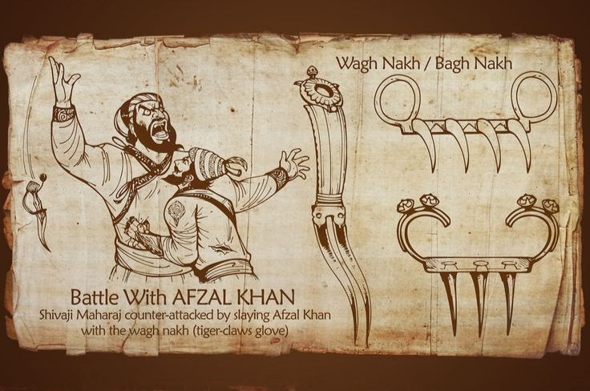

Over the course of his life, Shivaji engaged in both alliances and hostilities with the Mughal Empire, the Sultanate of Golkonda, Sultanate of Bijapur and the European colonial powers. Shivaji's military forces expanded the Maratha sphere of influence, capturing and building forts, and forming a Maratha navy.Shivaji established a competent and progressive civil rule with well-structured administrative organisations. He revived ancient Hindu political traditions, court conventions and promoted the usage of the Marathi and Sanskrit languages, replacing Persian in court and administration. Praised for his chivalrous treatment of women, Shivaji employed people of all castes and religions, including Muslims and Europeans, in his administration and armed forces.
Chattrapati ShivaJi Maharaj.
Maratha Empire

The Maratha Empire, also referred to as the Maratha Confederacy, was an early modern Indian empire and later a confederation that controlled large portions of the Indian subcontinent in the 18th century. Maratha rule formally began in 1674 with the coronation of Shivaji of the Bhonsle dynasty as the Chhatrapati. Although Shivaji came from the Maratha caste, the Maratha empire also included warriors, administrators and other nobles from the Maratha and several other castes from what is known today as Maharashtra. The Marathas were a Marathi-speaking warrior group from the western Deccan Plateau (present-day Maharashtra) who rose to prominence by establishing Hindavi Swarajya (meaning "self-rule of Hindus").The Marathas became prominent in the seventeenth century under the leadership of Shivaji, who revolted against the Adil Shahi dynasty and the Mughals to carve out a kingdom with Raigad as his capital. Marathas were one of the major causes for the decline of the Mughal Empire in the early eighteenth century.The religious attitude of Mughal Emperor Aurangzeb estranged non-Muslims, and his inability to suppress the resulting Maratha insurgency after a 27-year war came at a great cost for his men and treasury and eventually ensured Maratha ascendency and their control over sizeable portions of former Mughal dominions in the north of the Indian subcontinent.
Battle of Partapgarh
King Shivaji sent an envoy to Afzal Khan, expressing his desire for peace and stating that he did not want to fight. Eventually, a meeting was arranged between Shivaji raje ("king") and Afzal Khan at a highly decorated tent called shamiyana, located at the foothills of Pratapgad. It was agreed that each of them would bring only ten personal bodyguards, who would remain 'one arrow-shot' away from the pair. For the meeting, Shivaji raje chose Sambhaji Kondhalkar, Jiva Mahala, Siddi Ibrahim, Kataji Ingle, Kondaji Kank, Yesaji Kank, Krishnaji Gaikwad, Surji Katake, Visaji Murambak, and Sambhaji Karvar. However, Afzal Khan concealed a small dagger called a katyar in his coat, while Shivaji raje wore armor underneath his clothes and carried a concealed weapon called wagh nakha ("nails of the tiger") in one hand As the two men entered the tent, Afzal Khan, who stood at an imposing height of 6'7", embraced Shivaji Maharaj, but then attempted to strangle him with his vice-like grip and pierce him with his dagger. Fortunately, Shivaji raje's armor protected him from the attack. Shivaji raje retaliated by using his wagh nakh to slash Khan's stomach, disemboweling him. Afzal Khan's bodyguard, Bada Sayyed, then attacked Shivaji raje with a sword, but Jiva Mahala, Shivaji raje's personal bodyguard, fatally struck him down. Additionally, Afzal Khan's lawyer, Krishna Bhaskar Kulkarni, also attacked Shivaji, but in retaliation, Shivaji killed him with his sword.
Despite his injuries, Afzal Khan managed to hold his gushing entrails and stumbled out of the tent, fainting and bleeding. He then threw himself into his palanquin, and the bearers quickly carried him away down the slope. However, Sambhaji Kavji Kondhalkar, Shivaji raje's lieutenant and one of the accompanying guards, gave chase and beheaded Afzal Khan.